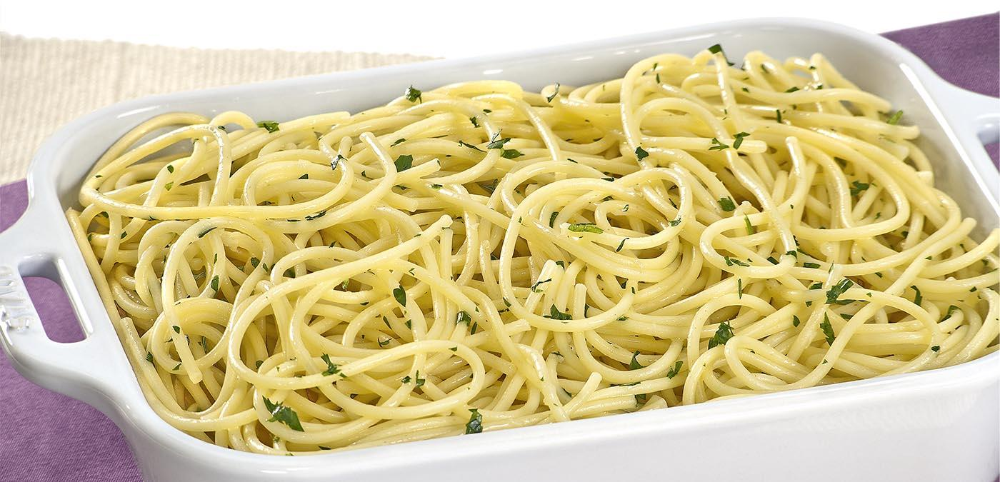

1 pacote de macarrão 500 g (tipo do macarrão a gosto)
1 saquinho de alho granulado
1/2 tablete de manteiga (não use margarina)
1 colher (sopa) de azeite extra virgem
ervas (manjericão, orégano, salsa, cebolinha, tomilho, a gosto)
sal
1 dente de alho
gengibre em pó a gosto
1 folha de louro

Modo de preparo
Quando faltar mais ou menos 5 minutos para ficar no ponto de escorrer o macarrão, comece o preparo da receita.
Na frigideira quente coloque a manteiga, o azeite, a folha de louro, e o alho granulado.
Nesta hora um pouco de agilidade, pois o macarrão escorrido vai para a frigideira, sendo mexido e dosado com sal a gosto, as ervas, o gengibre em pó a gosto também.
O dente de alho, serve para você untar os pratos onde serão servidos o macarrão.
Coloque as porções nos pratos já com o cheiro do alho, e enfeite com algumas ervas.